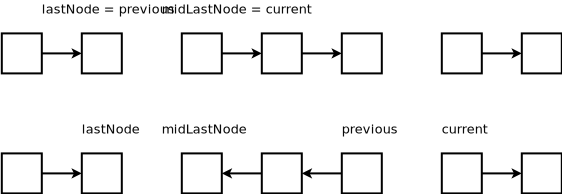

Utility Classes/Functions
Common Math functions
- abs()
- ceil()
- floor()
- min()
- max()
- pow()
- sqrt()
Collections Library
Comparator
Constructors for various data structures that apply sortation to the data allow you to pass in a comparator to compare elements as they are inserted. In addition the Collections.sort() method allows you to apply sortation to any data structure that implements the List interface. Being comfortable with the Comparator syntax is undoubtedly necessary.
The Comparator has one abstract method compare().
int compare(T obj1, T obj2);
- Returns -ive integer if first argument < second argument (or first argument comes before second argument in a natural ordering)
- Returns 0 if first argument == second argument
- Returns +ive if first argument > second argument (or first argument comes after second argument in a natural ordering)
Longhand syntax.
public class MyObjectComparator implements Comparator<MyObject> {
@Override
public int compare(MyObject obj1, MyObject obj2) {
return Integer.compare(obj1.getValue(), obj2.getValue());
}
}
Functional syntax.
Comparator myComparator = (a, b) -> Integer.compare(a.getValue(), b.getValue());
Note: It's a good idea to use Integer.compare() here to prevent overflow.
Data Structures
Primitive Types
Sizes of Types
In Java, sizes of data types are machine independent. A word in the JVM is 32-bits.
| Data Type | Bytes | Bits |
|---|---|---|
| boolean | - | 1 |
| byte | 1 | 8 |
| short | 2 | 16 |
| char | 2 | 16 |
| int | 4 | 32 |
| float (decimal) | 4 | 32 |
| long | 8 | 64 |
| double (decimal) | 8 | 64 |
Bit Manipulation
A common problem is computing the number of bits set to 1 in an integer. There are two solutions:
- Loop starting at the least significant digit of the integer and bitwise-AND the integer with 1. Increment count and shift right by one bit on each iteration. The runtime complexity is O(n) with n being the number of bits in the integer.
public int countOnes(int integer) {
int count = 0;
while (integer > 0) {
if ((integer & 1) == 1) {
count++;
}
integer = integer >>> 1;
}
return count;
}
- A less intuitive approach is to use a couple of bit manipulation tricks to isolate out the least significant bit set to 1 of the input integer and XOR this with the input (to remove this bit). Continue doing this while integer isn't 0. The runtime complexity is O(s) where s is the number of 1's in the integer. This trick works even for negative numbers.
Note: x & (x - 1) also seem to replace lowest bit that is 1 with 0
public static int countOnes2(int integer) {
int count = 0;
while (integer > 0) {
// Isolate out the rightmost set bit
int rightMostOne = integer & ~(integer - 1);
// Remove the bit from the original input
integer = integer ^ rightMostOne;
count++;
}
return count;
}
Summary
- Clear the lowest set bit:
x & (x - 1)- Intuition: Substracting one from
xwill turn the lowest bit into a 0
- Intuition: Substracting one from
- Isolate lowest 1-bit:
x & ~(x - 1)- Intuition: Following from above, the NOT operator will turn the 0 into a 1 and so the AND operator will end up selecting the lowest 1-bit
Binary Search Trees
Java Libraries
Java has TreeSet and TreeMap which are libraries that are based on the BST. These store the elements in ascending order.
Graphs
Graph Traversal
Graphs are typically traversed using depth first search or breadth first search. Both these family of algorithms have certain properties that make them more suitable for some problems over the other. In cases where traversal of a whole graph is required, either approach will find the correct solution.
Depth First Search
Greedily traverses the depth of a graph/tree before exploring neighboring nodes. It's often implemented as a recursive algorithm. But, it can also be implemented iteratively using a stack.
Recursion
Recursion tends to result in a solution that requires less lines of code.
public void dfs(Node root) {
if (root == null) return;
for (Node child: root.getChildren()) {
dfs(child);
}
}
The shortcoming of using recursion for DFS is that it requires stack space. A graph with a large depth can quickly result in a stack overflow. This can be overcome by converting the solution to use tail-recursion.
Iteration
For languages that do not support tail-recursion optimization (e.g. Java, Python), we can use a Stack data structure to iteratively traverse the graph.
public void iterativeDFS(Node root) {
Stack<Node> stack = new Stack<>();
stack.add(root);
while (!stack.isEmpty()) {
Node current = stack.pop();
// Perform backtracking tasks
for (Node child: current.getChildren()) {
// Traverse child
stack.push(child);
}
}
}
Breadth First Search
This algorithm traverses its direct children first before any of its children's children. The consequence of this is that it is able to naturally solve shortest-path problems quite easily.
public void bfs(Node root) {
Queue<Node> queue = new LinkedList<>();
queue.add(root);
while (!queue.isEmpty()) {
Node current = queue.remove();
for (Node child: current.getChildren()) {
queue.add(child);
}
}
}
Notice that the algorithm for BFS is almost identical to iterative DFS. The only difference between that it utilizes a queue (FIFO) versus a stack (LIFO).
Topological Sort
Topological sort is commonly used for resolving dependency graphs or job scheduling. The algorithm only works if the graph is acyclic. However, it can be applied to find find out whether a graph is acyclic or cyclic.
For example, given the graph below, the topological order for the graph is ABCD or ACBD.
The graph below is non-resolvable by topological sort because D has a dependency on A. Kahn's algorithm would return an incomplete ordering of nodes (i.e. AB).
Breadth First Search Approach (Kahn's Algorithm)
The intuition here is to start at the top of the dependency tree and removing each node. Once the in-degree of a node reaches zero, remove it and add it to the sort order.
- Compute the in-degree of each node
- Add all nodes with zero dependents into a queue
- As each node is removed from the queue, append the node to the result list and for each of its children (dependencies):
- Decrement its ingress count
- Add it to the queue if ingress count reaches 0
- When the queue is empty, if the number of nodes in the resulting list is less than the number of nodes, the ordering cannot be resolved (the graph is cyclic).
If the graph is cyclic the algorithm will report an incomplete ordering. It will reach a point where there is at least two nodes that have an in-degree greater than zero. This property is useful for detecting cycles within a graph.
Depth First Search Approach
Intuition: Recursively traverse the graph and mark each node as visited. If a node is already visited, skip it. When a leaf is discovered, add nodes to a stack during backtracking. Unlike the BFS approach, the topological ordering is in reverse order because we traverse the bottom of the dependency graph and add it to the ordering.
- For each node, recursively traverse the graph
- Mark each node as visited
- During backtracking, add the node onto a stack
- Pop each node of the stack for the topological order
The shortcoming of this approach is that it doesn't detect cycles in the graph (although you can use DFS with a few modifications to do so).
Problems
Patterns
This section groups algorithms according to their patterns. It's loosely based on the Grokking the Coding Interview course on educative.io.
Links & Resources
Sliding Window
The sliding window pattern is the description given to a family of greedy algorithms that can be applied to optimally find the min/max property of a continguous slice of an array. The name comes from the fact that the algorithm keeps track of two indices into the input array, tail and head, that respectively form the start end end of a "window". The algorithm commonly makes use of a loop invariant to decide whether to shrink or expand the size of the window to arrive at a local optima.
This set of algorithms allow a problem to be solved in one pass with a time complexity of O(n).
Fixed-size Window
- The size of the window is perserved. When moving the window, both
headandtailare incremented simultaneously.
Elastic Window
- Loop through array by incrementing
headwhile perserving loop invariant - When the loop invariant is violated, shrink the array by incrementing
tailuntil loop invariant no longer violated
Example Problems:
Snapping Window
When the loop invariant no longer holds, the window snaps closed (tail = head although we don't need to keep track of tail if we don't care about window size).
Example Problems:
Two Pointers
Breadth First Search
BFS can be implemented by using a queue to traverse nodes in order of nodes that are closest to start point. This naturally finds the shortest path solution from the root node.
See BFS section of graphs traversal for more information.
Level Order Traversal
A trick to traverse the tree in order is to observe the size of the queue at the start of the while loop and only traverse this number of nodes in the current iteration. If done correctly, the next iteration will only visit the children of the current iteration.
public void bfs(Node root) {
Queue<Node> queue = new LinkedList<>();
queue.add(root);
while (!queue.isEmpty()) {
int size = queue.size();
for (int i = 0; i < size; i++) {
Node current = queue.remove();
for (Node child: current.getChildren()) {
queue.add(child);
}
}
}
}
Depth First Search
The recursive process for DFS usually results in less code and is more elegant. DFS can also be done utilizing a stack. See the DFS section on the discussion on graphs for more information. Note that the recursive traversal method is analogous to the iterative one. In iterative traversal, the stack data structure emulates the call stack of the recursive solution.
Keeping Track of the Current Path
A common pattern is to be asked to find the path from root to leaf. This can be done by keeping track of the current path in a list and removing it during backtracking.
public List<Node> dfs(Node root, List<Node> path) {
if (root == null) return;
path.add(root);
if (condition) {
return path;
}
for (Node child: root.getChildren()) {
dfs(child);
}
// We're done considering this node. Remove it as we're now backtracking.
path.remove(path.size() - 1);
}
Linked List Reversal
The important thing to recognize here is that you'll need to store the pointer to the next item in the list prior to pointing the current pointer to the previous item.
In total, you'll need to keep track of three pointers.
current: This is the current node in the list that you're processingprevious: This is the head of the newly reversed listnext: Points to the next item in the list. Without this, when you updatecurrentto point toprevious, you'll lose reference to the original list.
The algorithm will then look like this:
- For the
currentnode, save itsnextnode in a temp variable - Point the current node's next pointer to the
previousitem - Update
previouspointer to store thecurrentnode - Update
currentto store thenexttemp variable from step 1
Do this until the current node becomes null and then return previous, which is now the head of the new list.
Can think of this as two parts. Steps 1-2 can be thought of "processing steps" where we're actually reversing the list. Steps 3-4 can be thought as "update" steps.

Reversing Sub-lists
For reversing a subsection of the list, think of the list as three separate lists. The first untouched portion, the middle reversed portion and the last untouched portion. Apply the algorithm to the mid section and recombine the three sub-lists.
To recombine, you'll need to store the last node in the first section and the first node in the last section.
When arriving at the sublist to reverse, store the last node of the first list (previous) and what will be the last node of the middle list after reversing(current). The diagram below shows why we need to store these as they will be needed when recombining the sublists.

After reversing, we can recombine the lists by setting lastNode.next = previous and midLastNode.next = current.
Dynamic Programming
Binary Search
Binary search can typically be used to find a certain element in a sorted collection (i.e. Array, LinkedList or Matrix). The basic case applies when the exact target element is in the collection.
Apply the following agorithm while start <= end:
- Split the array in the middle use
middle = start + (end - start) / 2to prevent integer overflow - If the target element is smaller than the
middleelement, apply the algorithm to the left side of the array:end = mid - 1 - If the target element is grater than the
middleelement, apply the algorithm to the right side of the array:start = mid + 1 - If equal, return the element
Variation in Loop Invariant
The loop invariant start <= end introduces some interesting properties when the target element isn't in the collection. At the beginning of the last iteration, start == middle == end. So when the algorithm progresses, because of steps 2 or 3 above, the start will become the smallest element greater than the target (ceiling). The end element will become the largest element smaller than the target (floor).